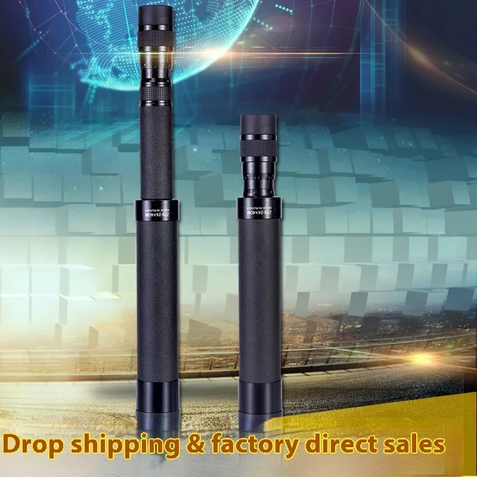
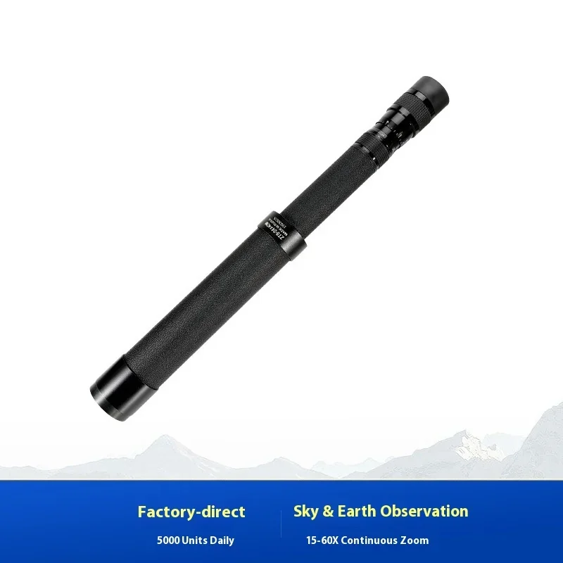
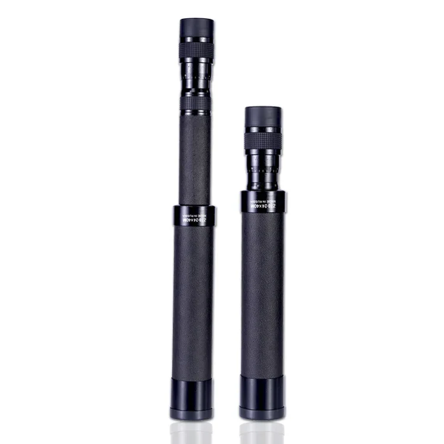
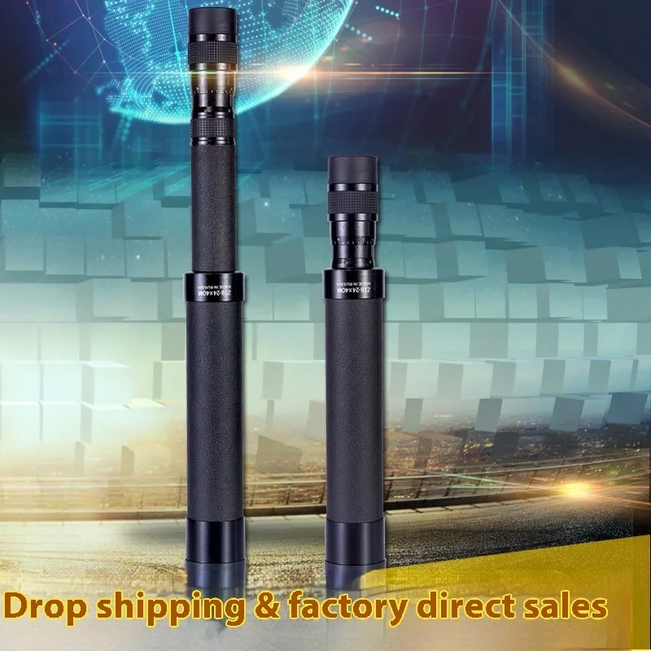
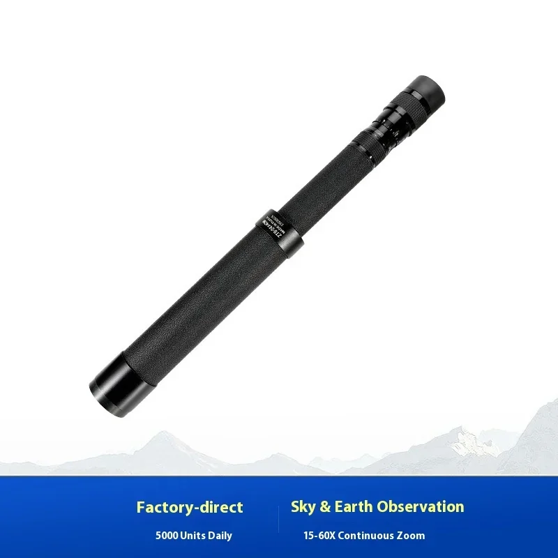
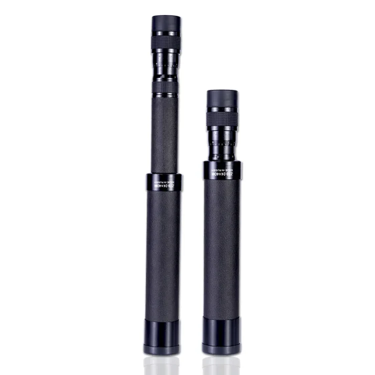

Telemonocular Begos Professional IPX4 impermeable con revestimiento FMC, zoom 8-24x40 e iluminación LED para teléfonos móviles (uso en exteriores)
- Impermeabilidad IPX4: Enfréntete a los elementos con confianza. Este telemonocular está diseñado para resistir la lluvia y las salpicaduras, lo que garantiza un rendimiento confiable en cualquier clima.
- Iluminación LED: Mejore su capacidad de visualización con poca luz con la iluminación LED integrada. Capture detalles con claridad incluso en la oscuridad.
- Compatibilidad con teléfonos móviles: ¡Comparta sus increíbles descubrimientos al instante! El telemonocular Begos se integra perfectamente con su teléfono inteligente, lo que le permite capturar y compartir fotos y videos impresionantes.
Ya sea que sea un observador de aves experimentado, un excursionista entusiasta o simplemente busque explorar el mundo que lo rodea, el telemonocular Begos Professional IPX4 impermeable con revestimiento FMC 8-24x40 con zoom es el compañero perfecto para su próxima aventura al aire libre.
El Telemonocular Profesional Begos está repleto de características diseñadas para mejorar su experiencia visual al aire libre. Desde su impresionante alcance de zoom hasta su robusta construcción impermeable, este telemonocular tiene todo lo que necesita para capturar vistas impresionantes y explorar el mundo que le rodea.
- Rango de Zoom 8-24x40: Acérquese increíblemente a objetos distantes con el potente zoom de 8x a 24x. Observe la vida silvestre, explore paisajes o disfrute de eventos deportivos con detalles nítidos.
- Sistema de Lentes con Recubrimiento FMC: Las lentes con recubrimiento multicapa completo proporcionan una transmisión de luz y una claridad excepcionales, garantizando imágenes vibrantes incluso en condiciones de iluminación difíciles.
- Iluminación LED: La iluminación LED integrada le permite ver con claridad en situaciones de poca luz. Mejore su experiencia visual al amanecer o al anochecer con la práctica fuente de luz incorporada.
- Diseño a prueba de agua IPX4: El Telemonocular Profesional Begos está diseñado para resistir las inclemencias del tiempo. Su clasificación IPX4 significa que puede resistir salpicaduras y gotas de agua, manteniendo su vista clara incluso con lluvia ligera.
- Soporte para teléfono móvil: capture y comparta fácilmente sus observaciones con el soporte para teléfono móvil incluido. Fotografíe o grabe vistas impresionantes directamente a través de la lente telemonocular.
El telemonocular profesional Begos está fabricado con materiales y componentes de alta calidad para ofrecer un rendimiento excepcional:
- Aumento: Zoom de 8x a 24x
- Diámetro de la lente del objetivo: 40 mm
- Recubrimiento de la lente: FMC (recubrimiento múltiple completo)
- Clasificación de resistencia al agua: IPX4
Este telemonocular ofrece una gama de beneficios para los entusiastas de las actividades al aire libre y para cualquiera que busque mejorar su experiencia visual:
- Vistas nítidas: Las lentes con recubrimiento FMC y el potente zoom brindan imágenes increíblemente nítidas y detalladas.
- Capacidades de observación mejoradas: Explore la vida silvestre, paisajes, eventos deportivos y más con la capacidad de acercarse a objetos distantes.
- Mejora en condiciones de poca luz Rendimiento: El sistema de iluminación LED integrado le permite ver con claridad incluso en condiciones de poca luz.
- Duradero y fiable: El diseño resistente al agua IPX4 garantiza que su telemonocular resista las inclemencias del tiempo y ofrezca un rendimiento duradero.
- Experiencias para compartir: Capture y comparta sus observaciones fácilmente con el soporte para teléfono móvil incluido.
El telemonocular profesional Begos es fácil de usar y perfecto para diversas actividades al aire libre:
- Observación de aves: Observe las aves con detalle desde la distancia, identificando diferentes especies y observando su comportamiento.
- Observación de fauna: Acérquese a los animales en su hábitat natural sin molestarlos. Capture imágenes impresionantes de ciervos, alces y otros animales salvajes.
- Eventos deportivos: Siga la acción en el campo o la cancha con facilidad. Disfrute de una visión nítida de los jugadores y de los detalles desde lejos.
- Camping y senderismo: Explore nuevos senderos y admire las vistas panorámicas con mayor claridad. Identifique puntos de referencia y navegue con confianza.